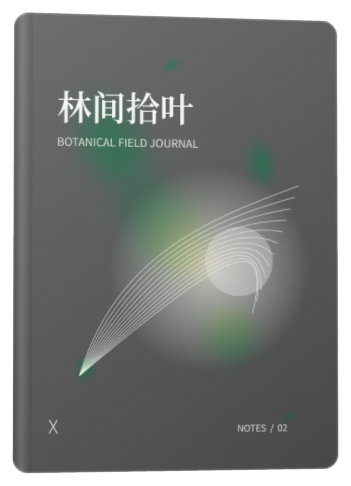
🔍
MODE 01 · 点击切换左屏渲染 ➔
高斯颜料晕染（gaussianColour）
从素白/黑白画面起笔，8 枚独立椭圆水彩墨团依次扩散融合，温柔染亮整张封面底画。
▶ 点击看左侧播放高斯晕染实录正视案头的自然阅读角度！右侧运行复刻 BookScenePainter (32×10 曲页物理网格) 的 Three.js 翻页书本——拖动书角或点按钮翻阅全部 8 个完整功能跨页（16 页），亲手摸到实实在在的纸页弯折与装订厚度！
拒绝假效果！左侧直接以原幅书封展示「🎬 安卓真机原生录屏」与「🎛️ 逐行移植 infinite_book_entry.frag 真实 GLSL」——每次播放完整遍染即定格成画，点击「重播开本」或轻触封面即可再次演绎！

🔍从素白/黑白画面起笔，8 枚独立椭圆水彩墨团依次扩散融合，温柔染亮整张封面底画。
▶ 点击看左侧播放高斯晕染实录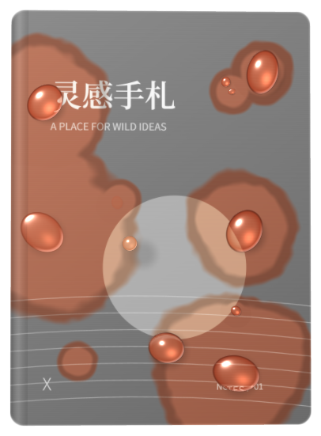
🔍22 颗凸起玻璃水珠自带吸色属性，砸落黑白封面后折射下方真彩细节，湿润晕圈化开直到整页上色。
▶ 点击重播水滴泼溅效果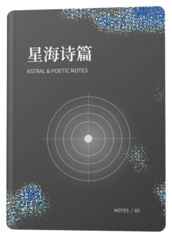
🔍142 格细腻微观方阵随相干波前闪烁亮起，青金星尘掠过黑白封面之处瞬间重现全部色彩。
▶ 点击看左侧播放闪点波前实录严格按照源码 BookCoverPainter 绘制《日常随记》《灵感手札》《旅行片段》真书皮与棉麻/皮革书脊纹理；拖动鼠标即可交互检视书排与空间深度。
🖱️ 按住鼠标左键自由 360° 转动这本精装笔记本，细致查看正面太阳弧纹、皮革缝线书脊与留白封底！
内置 4 款可商用开源书法字库，支持导入个人本地 TTF / OTF（≤ 32 MB，仅留在本机绝不外传）。
挑选任意笔刷并在右侧浅米纸面自由划线（石墨铅笔颗粒、水彩半透渲染、荧光宽带、毛笔速度变细均有表现）！
自由手画线 / 箭头(带钩) / 三角 / 圆，或点击上方预设演示！
已擦除荧光：0% · 底墨保留率：100%
3.4.3 待办拖柄紧贴文字宽度，哪怕短词也能右拖摆正。
[Page 3] Multi-Head Attention: Q·Kᵀ / √d_k — 允许模型同时关注不同表示子空间的信息。
[Page 5] Positional Encoding: PE(pos, 2i) = sin(pos / 10000^(2i/d)) — 注入序列相对位置信息。
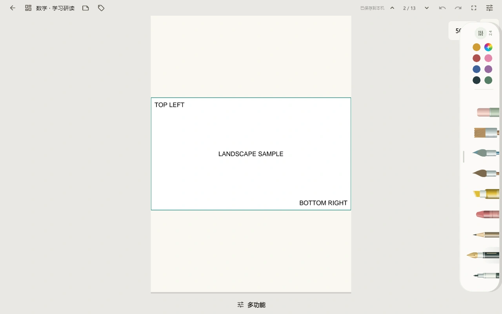
🔍 放大完整保留 PDF 原文件、横纵版式与文字层。
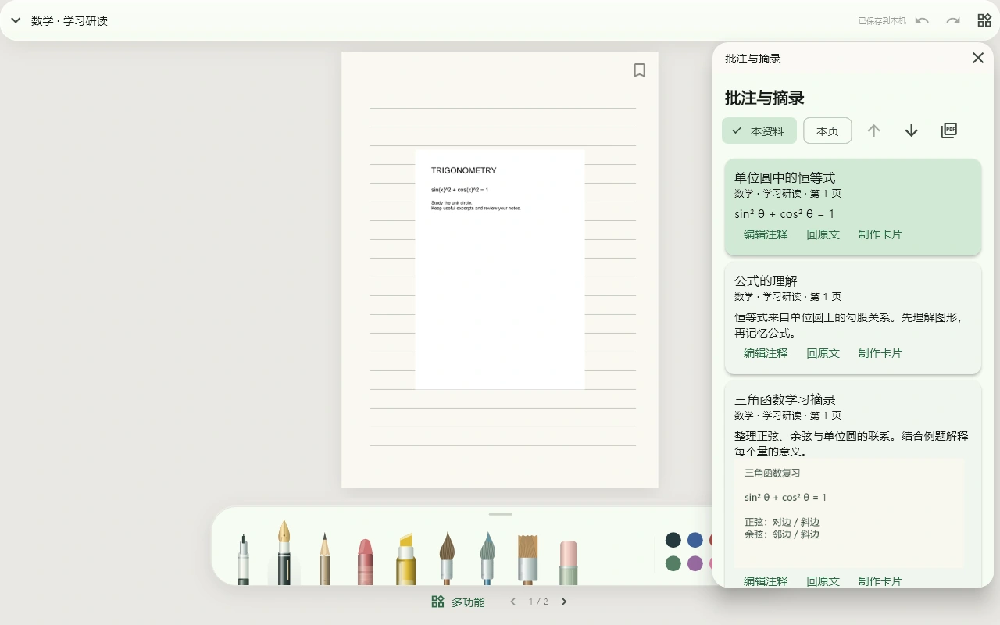
🔍 放大按页过滤批注，点一下跳回原本那一页。
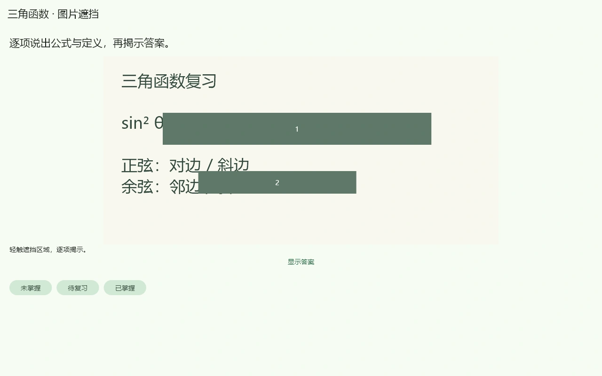
🔍 放大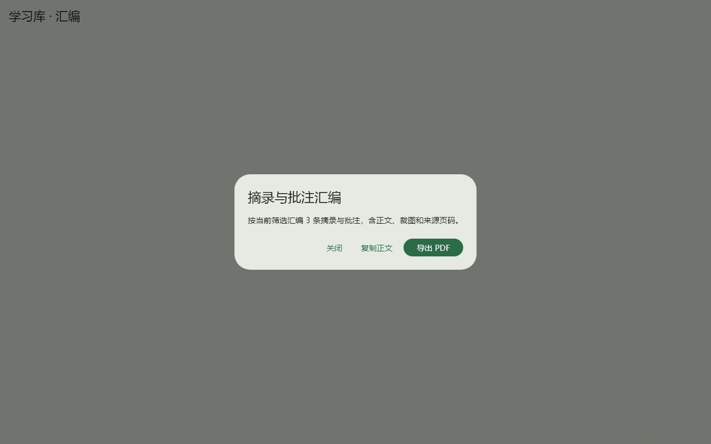
🔍 放大汇总批注截图与页码，本地直接导出新讲义。
后台端侧队列识字：Android 随包识字 · Apple Vision 本机运行。识别结果需亲眼核对错别字后再入检索库。
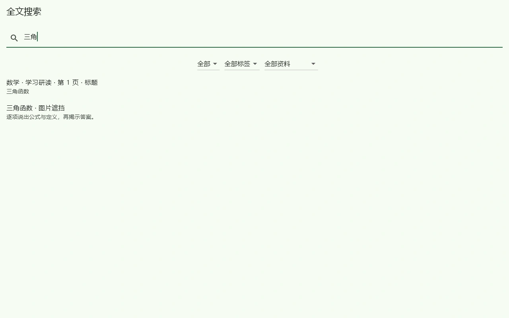
OCR 与 PDF 原文一键穿透直达。
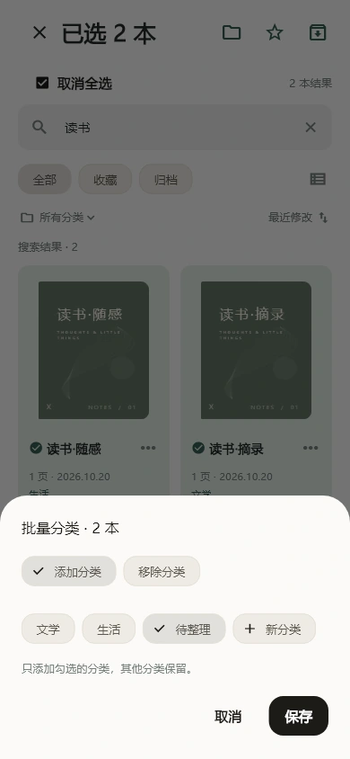
几十本笔记全选秒归分类或收藏夹。
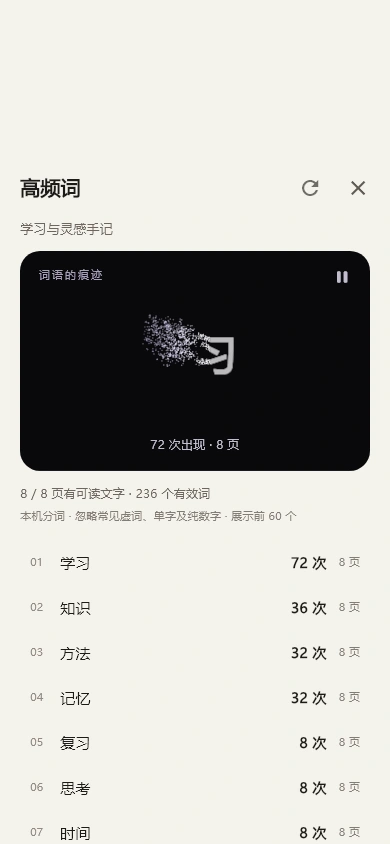
点击上方词条或划过粒子场，亲眼见证本地前 60 高频核心概念聚散重组！
在下方画框里晃动鼠标改变陀螺仪倾角，点击画面触发水波/散雾/弹出/金属滴！
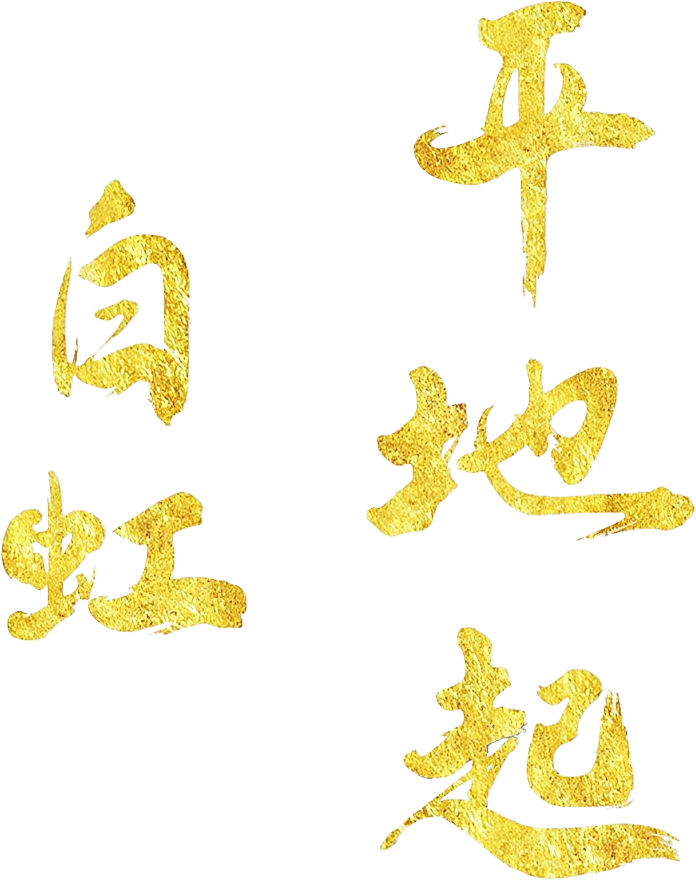
🔍 放大鉴赏画卷场景 03 · 白衣少年：随画面缓慢呼吸推镜，鎏金瘦金体「平地起白虹」伴指尖视差微移（全渠道 Android 与本地 IPA 均携带全部 27 景字图，原字体软件不随包）。
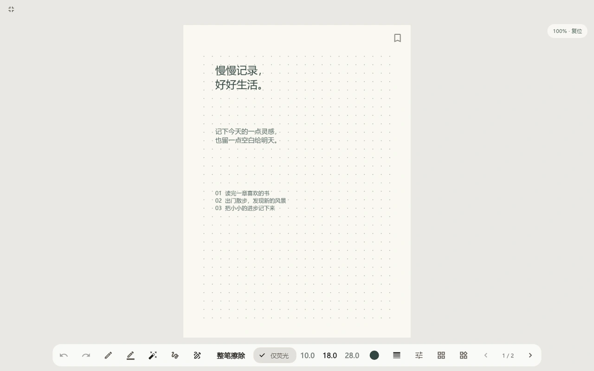
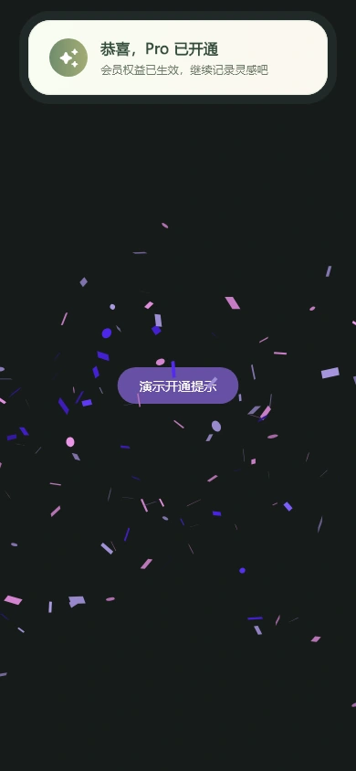
Android 核验权益生效瞬间屏幕炸开彩色纸屑与「恭喜，Pro 已开通」温柔弹窗。
拒绝开屏摇一摇与信息流打扰，哪怕会员到期也能永远流畅阅读写下的内容。
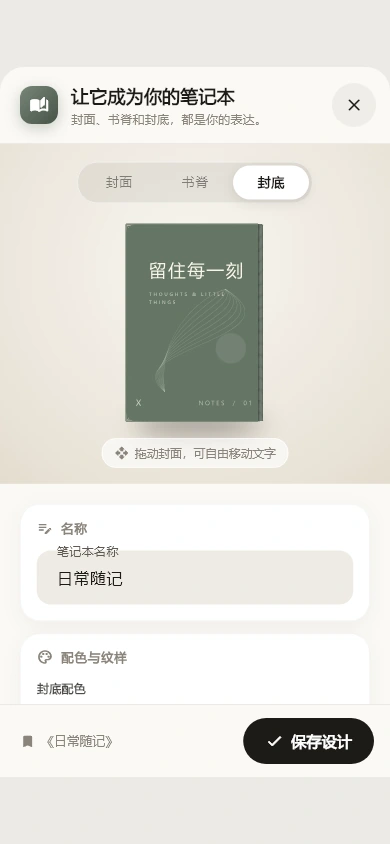
零负担体验真实 3D 翻页、核心质感笔刷与全部手写体验。
扩展日常手账与通勤灵感草稿本机额度。
开启加密跨端核验备份空间，学生党主力之选！
轻松装下多门重度专业课与大量原比例文献 PDF。
彻底打破边界限制，构筑跨十年的个人数字图书馆。
完整实装 4 套三维书架（含 3D 轮盘弧线与 ∞ 莫比乌斯纸带）、仅擦荧光橡皮、Vapor 高频词及随包本机中文图像 OCR。Android 公共更新唯一通过 Gitee（the-riverwq/x-notes-releases） 读取原公钥签名 latest-gitee.json 分发核验原证书 APK。
对齐核心 3D 翻页、3 大封皮实时着色、360° 造物、3.4.3 内页字库、Split View 分屏与 Apple Vision 端侧识字，签发本地 AltStore IPA。默认不启用云端自动识字；支持无网络离线验证许可与单账号两台设备上限。
献给所有不肯向平庸白板妥协、热爱纸墨触感与独立思考的人。
PORTED REAL SHADERS & BOOK PAINTERS · X NOTES v3.4.3+63 · 27 SCENES · ZERO AD NOISE